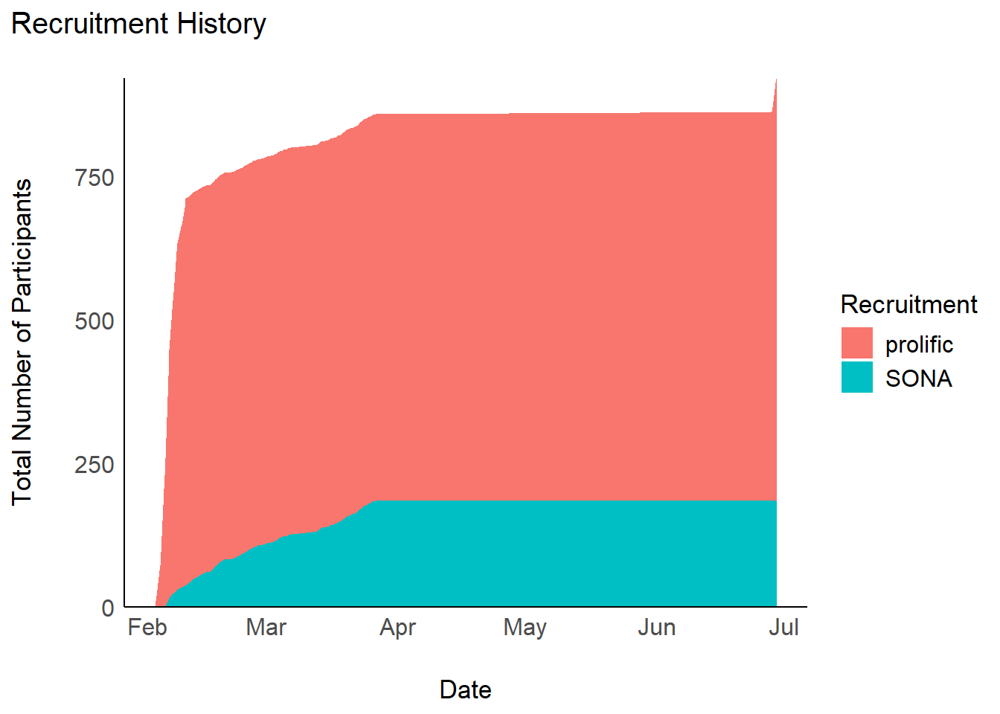
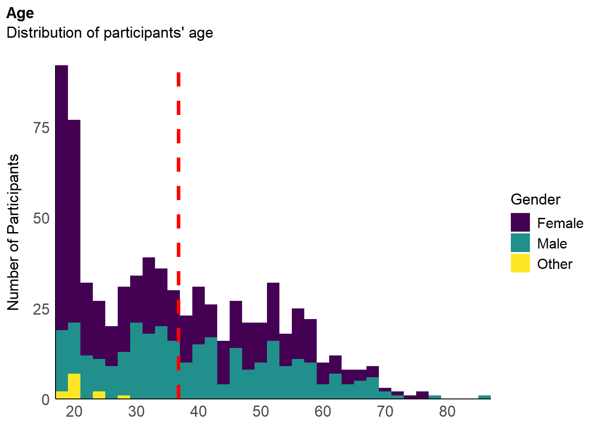
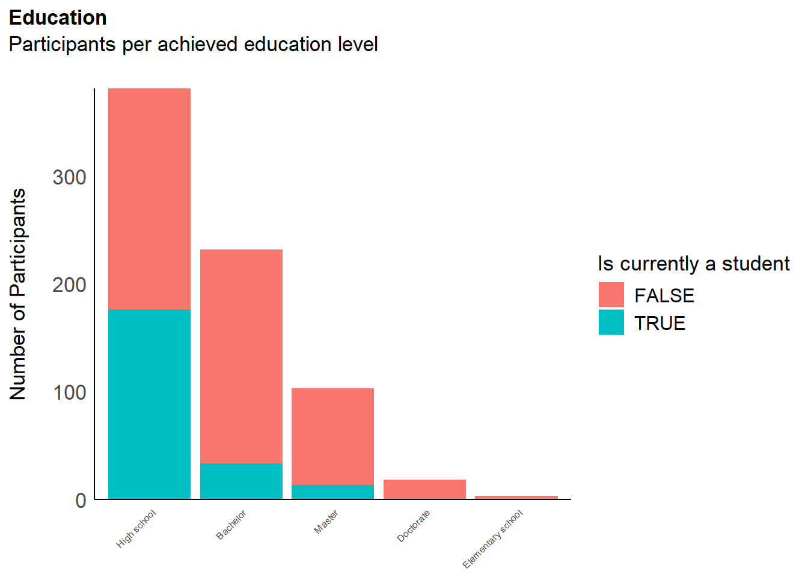
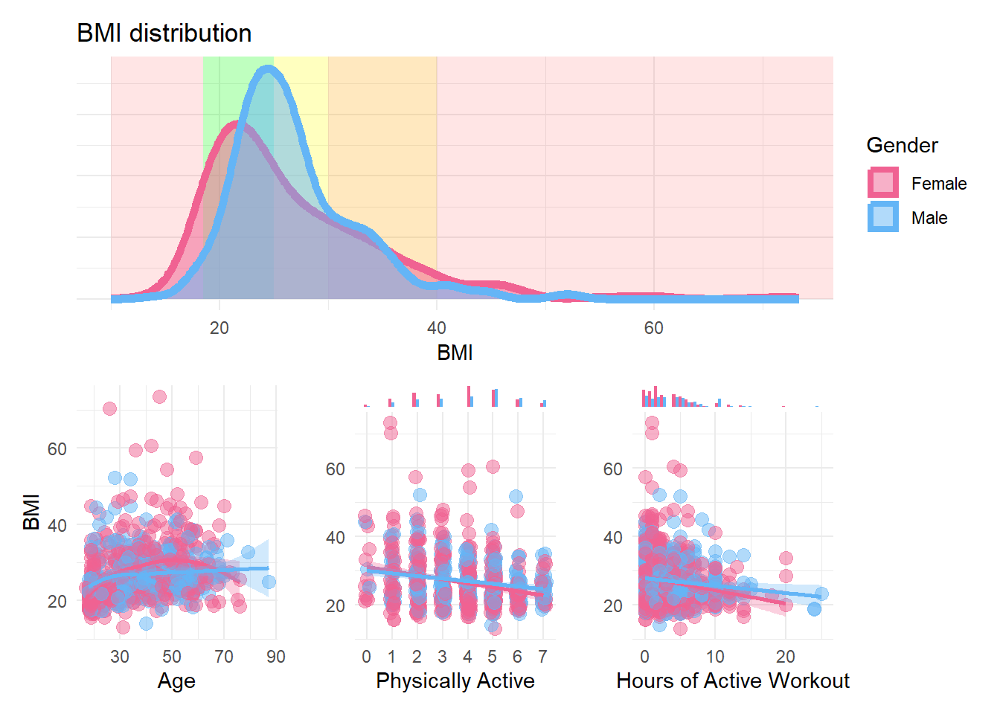
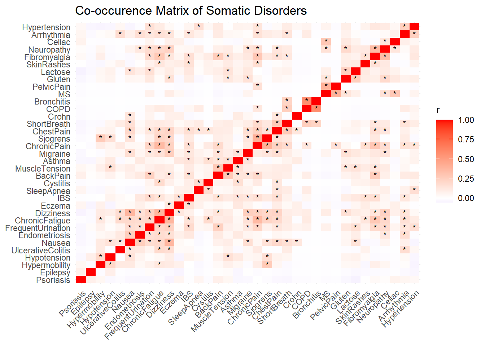
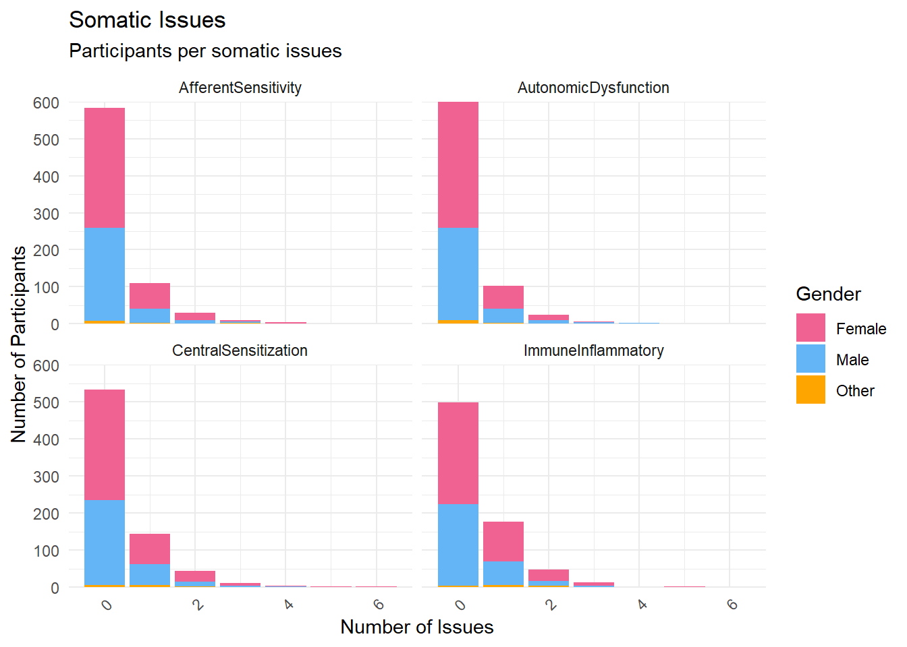
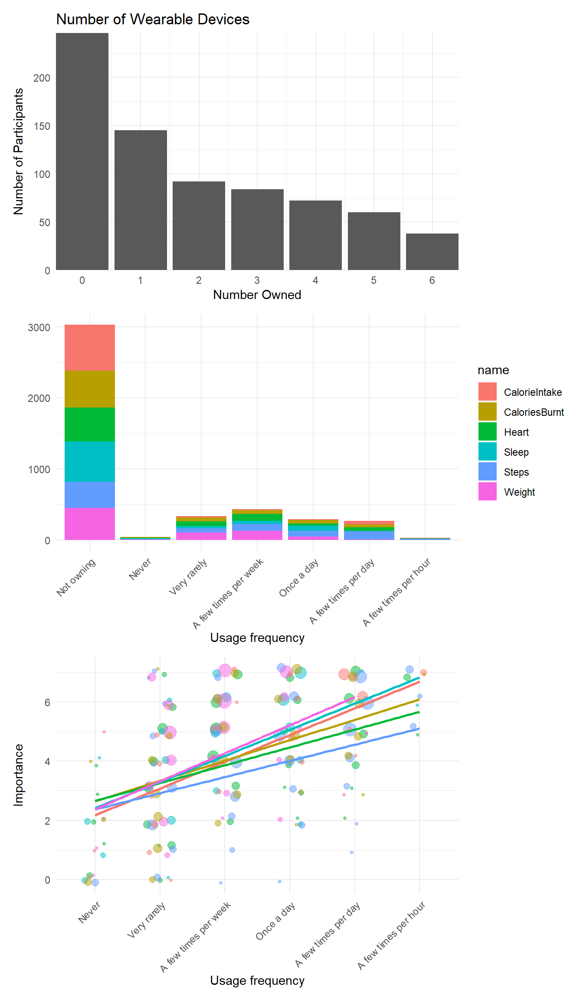

library(tidyverse)
library(easystats)
library(patchwork)
library(ggside)
library(ggdist)
df <- read.csv("../data/rawdata_participants.csv")Interoception Scale (Study 2) - Data Cleaning
Data Preparation
Recruitment History
Code
# Consecutive count of participants per day (as area)
df |>
mutate(Date = as.Date(Experiment_StartDate, format = "%Y-%m-%d %H:%M:%S")) |>
summarize(N = n(), .by=c("Date", "Recruitment")) |>
complete(Date, Recruitment, fill = list(N = 0)) |>
mutate(N = cumsum(N), .by="Recruitment") |>
ggplot(aes(x = Date, y = N)) +
geom_area(aes(fill=Recruitment)) +
scale_y_continuous(expand = c(0, 0)) +
labs(
title = "Recruitment History",
x = "Date",
y = "Total Number of Participants"
) +
see::theme_modern()
Code
# Table
summarize(df, N = n(), .by=c("Recruitment")) |>
arrange(desc(N)) |>
gt::gt() |>
gt::opt_stylize() |>
gt::opt_interactive(use_compact_mode = TRUE) |>
gt::tab_header("Number of participants per recruitment source")Number of participants per recruitment source
Feedback
Experiment Enjoyment
Code
df |>
summarise(n = n(), .by=c("Experiment_Enjoyment")) |>
filter(!is.na(Experiment_Enjoyment)) |>
mutate(n = n / sum(n),
Experiment_Enjoyment = fct_rev(as.factor(Experiment_Enjoyment))) |>
ggplot(aes(y = n, x = 1, fill = Experiment_Enjoyment)) +
geom_bar(stat="identity", position="stack") +
scale_fill_manual(values=c("green", "yellowgreen", "yellow", "orange", "red")) +
coord_flip() +
scale_x_continuous(expand=c(0, 0)) +
scale_y_continuous(labels = scales::percent) +
labs(title="Experiment Enjoyment",
subtitle="Proportion of participants by condition") +
guides(fill = guide_legend(reverse=TRUE)) +
theme_minimal() +
theme(
axis.title = element_blank(),
axis.text.y = element_blank(),
panel.grid.major.y = element_blank(),
panel.grid.minor.y = element_blank(),
legend.position = "top",
legend.title = element_blank()) Exclusions
Code
outliers <- list()Attention Checks
Code
dfchecks <- df |>
dplyr::mutate(
# "I can always accurately answer to the extreme left on this question to show that I am reading it"
A1 = ifelse(MINT_AttentionCheck_1 == 0, 0, 1),
# "I notice that I am being asked to respond all the way to the right"
A2 = ifelse(MAIA_AttentionCheck_1 == 6, 0, 1),
# "I can always accurately choose the lowest option"
A3 = ifelse(IAS_AttentionCheck_1 == 1, 0, 1),
# "Respond all the way to the right."
A4 = ifelse(BodyAwareness_AttentionCheck_1 == 5, 0, 1),
# "I am able to respond all the way to the left"
A5 = ifelse(TAS_AttentionCheck_1 == 1, 0, 1),
# "On the whole, I know I must press the highest option"
A6 = ifelse(PI18_AttentionCheck_1 == 5, 0, 1),
# "I feel that to show I'm being attentive I will press the lowest option"
A7 = ifelse(CEFSA_AttentionCheck_1 == 0, 0, 1),
.keep = "none"
)
dfchecks$Total <- rowSums(dfchecks)
dfchecks |>
mutate(Total = as.factor(paste0(Total, "/8"))) |>
ggplot(aes(x = Total)) +
geom_bar(aes(fill = Total)) +
scale_fill_viridis_d(guide = "none") +
labs(title = "Failed Attention Checks", y = "Number of Participants", subtitle = "Number of failed attention checks per participant") +
theme_modern(axis.title.space = 15) +
theme(
plot.title = element_text(size = rel(1.2), face = "bold", hjust = 0),
plot.subtitle = element_text(size = rel(1.2), vjust = 7),
axis.title.x = element_blank(),
)Code
outliers$attentionchecks <- df$Participant[dfchecks$Total >= 1]We removed 93 (12.83%) participants for having failed at least 1 attention check (out of 8).
Experiment Duration
Code
dfchecks$Duration <- df$Experiment_Duration
dfchecks$Outlier <- ifelse(dfchecks$Total >= 1, 1, 0)
dfchecks <- filter(dfchecks, Duration < 45)
m <- mgcv::gam(Outlier ~ s(Duration), data = dfchecks, family = "binomial")
estimate_relation(m, length=50) |>
ggplot(aes(x = Duration, y = Predicted)) +
geom_ribbon(aes(ymin = CI_low, ymax = CI_high), alpha = 0.2) +
geom_line() +
geom_vline(xintercept=10, linetype="dashed", color="red") +
theme_minimal() +
ggside::geom_xsidedensity(data=mutate(dfchecks,
Outlier=ifelse(Outlier==1, "Failed attention check", "Valid")),
aes(fill=Outlier), alpha=0.3) +
ggside::theme_ggside_void() +
labs(title = "Experiment Duration",
subtitle = "Predicted probability of failing attention checks by duration",
x = "Experiment Duration (minutes)",
y = "Probability of failing attention checks") Code
outliers$duration <- as.character(df[df$Experiment_Duration < 10, "Participant"])
outliers$duration <- outliers$duration[!outliers$duration %in% outliers$attentionchecks]We removed 2 (0.28%) participants for having completed the experiment in less than 5 minutes.
Multivariate Distance
Code
# Compute distance
dfoutlier <- performance::check_outliers(select(df, contains("MAIA_")),
method=c("optics"),
threshold=list(optics=2.5, optics_xi=0.03)) |>
as.data.frame() |>
mutate(Participant = fct_reorder(df$Participant, Distance_OPTICS),
Outlier_AttentionCheck = ifelse(Participant %in% outliers$attentionchecks, 1, 0),
Outlier_Duration = ifelse(Participant %in% outliers$duration, 1, 0),
Outlier = ifelse(Outlier_AttentionCheck == 1, "Failed Attention Checks", "Passed"),
Outlier = ifelse(Outlier == "Passed" & Outlier_Duration == 1, "Duration", Outlier))
outliers$distance <- as.character(dfoutlier[dfoutlier$Distance_OPTICS < 3, "Participant"])
outliers$distance <- outliers$distance[!outliers$distance %in% c(outliers$attentionchecks, outliers$duration)]
p1 <- dfoutlier |>
ggplot(aes(x=Participant, y=Distance_OPTICS)) +
geom_bar(aes(fill=Outlier), stat="identity") +
geom_hline(yintercept = 3, linetype="dashed", color="red") +
labs(fill = "Status") +
scale_fill_manual(values=c("Duration" = "purple", "Failed Attention Checks"="red", "Passed"="grey")) +
theme_minimal() +
theme(axis.text.x = element_blank(),
panel.grid.major.x = element_blank())
m <- mgcv::gam(Outlier_AttentionCheck ~ s(Distance_OPTICS), data = dfoutlier, family = "binomial")
# parameters::parameters(m)
p2 <- estimate_relation(m, length=30) |>
ggplot(aes(x=Distance_OPTICS, y=Predicted)) +
geom_ribbon(aes(ymin=CI_low, ymax=CI_high), alpha=0.2) +
geom_line() +
geom_vline(xintercept=3, linetype="dashed", color="red") +
theme_minimal()
p1 | p2We removed 3 (0.41%) participants based on multivariate distance.
df <- filter(df, !Participant %in% c(outliers$attentionchecks, outliers$duration, outliers$distance))Dimension Computation
Code
compute_and_remove <- function(df, name="BodyAwareness", pattern=name, method="mean") {
items <- select(df, starts_with(pattern), -contains("AttentionCheck"))
df <- df[!names(df) %in% names(items)]
if(method == "mean") {
df[[name]] <- rowMeans(items, na.rm=TRUE)
} else {
df[[name]] <- rowSums(items, na.rm=TRUE)
}
df
}df <- compute_and_remove(df, name="IAS", method="sum")
df <- compute_and_remove(df, name="BPQ", pattern="BodyAwareness", method="mean")
df[grepl("^MAIA_.*_R$", names(df))] <- 6 - df[grepl("^MAIA_.*_R$", names(df))] # Reverse
df <- compute_and_remove(df, name="MAIA_AttentionRegulation", method="mean")
df <- compute_and_remove(df, name="MAIA_BodyListening", method="mean")
df <- compute_and_remove(df, name="MAIA_EmotionalAwareness", method="mean")
df <- compute_and_remove(df, name="MAIA_NotDistracting", method="mean")
df <- compute_and_remove(df, name="MAIA_Noticing", method="mean")
df <- compute_and_remove(df, name="MAIA_NotWorrying", method="mean")
df <- compute_and_remove(df, name="MAIA_SelfRegulation", method="mean")
df <- compute_and_remove(df, name="MAIA_Trusting", method="mean")df <- compute_and_remove(df, name="PHQ4_Anxiety", method="sum")
df <- compute_and_remove(df, name="PHQ4_Depression", method="sum")
# TODO: check if any reversed items in the following questionnaires
df <- compute_and_remove(df, name="TAS_EOT", method="mean")
df <- compute_and_remove(df, name="TAS_DDF", method="mean")
df <- compute_and_remove(df, name="TAS_DIF", method="mean")
df <- compute_and_remove(df, name="ERS_Arousal", method="mean")
df <- compute_and_remove(df, name="ERS_Sensitivity", method="mean")
df <- compute_and_remove(df, name="ERS_Persistence", method="mean")
df <- compute_and_remove(df, name="CERQ_Acceptance", method="mean")
df <- compute_and_remove(df, name="CERQ_PositiveRefocusing", method="mean")
df <- compute_and_remove(df, name="CERQ_PositiveReappraisal", method="mean")
df <- compute_and_remove(df, name="CERQ_SelfBlame", method="mean")
df <- compute_and_remove(df, name="CERQ_OtherBlame", method="mean")
df <- compute_and_remove(df, name="CERQ_Rumination", method="mean")
df <- compute_and_remove(df, name="CERQ_Catastrophizing", method="mean")
df <- compute_and_remove(df, name="CERQ_RefocusPlanning", method="mean")
df <- compute_and_remove(df, name="CERQ_Perspective", method="mean")
df <- compute_and_remove(df, name="CEFSA_Body", method="mean")
df <- compute_and_remove(df, name="CEFSA_Agency", method="mean")
df <- compute_and_remove(df, name="CEFSA_Emotion", method="mean")
df <- compute_and_remove(df, name="CEFSA_Familiarity", method="mean")
df <- compute_and_remove(df, name="CEFSA_Connection", method="mean")
df <- compute_and_remove(df, name="CEFSA_Reality", method="mean")
df <- compute_and_remove(df, name="CEFSA_Self", method="mean")
df[grepl("^PI18.*_R$", names(df))] <- 6 - df[grepl("^PI18.*_R$", names(df))] # Reverse
df$PI_Alive <- rowMeans(df[grepl("^PI18.*A_", names(df))], na.rm=TRUE)
df <- compute_and_remove(df, name="PI_Safe", pattern="PI18_GS", method="mean")
df <- compute_and_remove(df, name="PI_Enticing", pattern="PI18_GE", method="mean")
df$PI_Good <- rowMeans(select(df, PI_Safe, PI_Enticing), na.rm=TRUE)
df <- select(df, -starts_with("PI18_"))Final Sample
We removed 60 participants with missing data for the MINT due to a technical error.
df <- filter(df, !is.na(df$MINT_Awareness_RelA_29))The final sample includes 567 participants (Mean age = 39.4, SD = 14.0, range: [17, 87]; Gender: 53.4% women, 45.9% men, 0.71% non-binary; Education: Bachelor, 35.63%; Doctorate, 3.17%; Elementary school, 0.53%; High school, 43.92%; Master, 16.40%; Vocational diploma, 0.18%; Vocational Qualification, 0.18%; Country: 71.78% United Kingdom, 10.23% United States, 17.99% other).
Code
p_age <- df |>
ggplot(aes(x = Age, fill = Gender)) +
geom_histogram(data=df, aes(x = Age, fill=Gender), binwidth = 2) +
geom_vline(xintercept = mean(df$Age), color = "red", linewidth=1.5, linetype="dashed") +
scale_fill_viridis_d() +
scale_x_continuous(expand = c(0, 0), breaks = seq(20, max(df$Age), by = 10 )) +
scale_y_continuous(expand = c(0, 0)) +
labs(title = "Age", y = "Number of Participants", color = NULL, subtitle = "Distribution of participants' age") +
theme_modern(axis.title.space = 10) +
theme(
plot.title = element_text(size = rel(1.2), face = "bold", hjust = 0),
plot.subtitle = element_text(size = rel(1.2), vjust = 7),
axis.text.y = element_text(size = rel(1.1)),
axis.text.x = element_text(size = rel(1.1)),
axis.title.x = element_blank()
)
p_age
Code
p_edu <- df |>
mutate(Student = ifelse(is.na(Student), FALSE, Student),
Education = fct_relevel(Education, "High school", "Bachelor", "Master", "Doctorate")) |>
ggplot(aes(x = Education)) +
geom_bar(aes(fill = Student)) +
scale_y_continuous(expand = c(0, 0), breaks= scales::pretty_breaks()) +
labs(title = "Education", y = "Number of Participants", subtitle = "Participants per achieved education level", fill = "Is currently a student") +
theme_modern(axis.title.space = 15) +
theme(
plot.title = element_text(size = rel(1.2), face = "bold", hjust = 0),
plot.subtitle = element_text(size = rel(1.2), vjust = 7),
axis.text.y = element_text(size = rel(1.1)),
axis.text.x = element_text(size = rel(0.5), angle = 45, hjust =1),
axis.title.x = element_blank()
)
p_edu
Code
p_eth <- df |>
filter(!is.na(Ethnicity)) |>
ggplot(aes(x = "", fill = Ethnicity)) +
geom_bar() +
coord_polar("y") +
theme_minimal() +
theme(
axis.text.x = element_blank(),
axis.title.x = element_blank(),
axis.text.y = element_blank(),
axis.title.y = element_blank()
)
p_eth
Code
p_map <- df |>
mutate(Country = case_when(
Country=="United States"~ "USA",
Country=="United Kingdom" ~ "UK",
TRUE ~ Country
))|>
dplyr::select(region = Country) |>
group_by(region) |>
summarize(n = n()) |>
right_join(map_data("world"), by = "region") |>
# mutate(n = replace_na(n, 0)) |>
ggplot(aes(long, lat, group = group)) +
geom_polygon(aes(fill = n)) +
scale_fill_gradientn(colors = c("#E66101", "#ca0020", "#cc66cc")) +
labs(fill = "N") +
theme_void() +
labs(title = "Country of Residence", subtitle = "Number of participants by country") +
theme(
plot.title = element_text(size = rel(1.2), face = "bold", hjust = 0),
plot.subtitle = element_text(size = rel(1.2))
)
p_mapCode
sort(table(df$Country)) |>
as.data.frame() |>
rename(Country = Var1) |>
arrange(desc(Freq)) |>
gt::gt()| Country | Freq |
|---|---|
| United Kingdom | 407 |
| United States | 58 |
| Canada | 56 |
| Ireland | 19 |
| Australia | 16 |
Code
p_bmi <- df |>
filter(!is.na(BMI), Gender != "Other") |>
ggplot(aes(x=BMI)) +
annotate("rect", xmin=10, xmax=18.5, ymin=0, ymax=Inf, fill="red", alpha=0.1) +
annotate("rect", xmin=18.5, xmax=25, ymin=0, ymax=Inf, fill="green", alpha=0.25) +
annotate("rect", xmin=25, xmax=30, ymin=0, ymax=Inf, fill="yellow", alpha=0.25) +
annotate("rect", xmin=30, xmax=40, ymin=0, ymax=Inf, fill="orange", alpha=0.25) +
annotate("rect", xmin=40, xmax=Inf, ymin=0, ymax=Inf, fill="red", alpha=0.1) +
geom_density(aes(color=Gender, fill=Gender), alpha=0.5, linewidth=2) +
labs(title = "BMI distribution") +
scale_fill_manual(values = c("Male"= "#64B5F6", "Female"= "#F06292", "Other"="orange", "Missing"="brown")) +
scale_color_manual(values = c("Male"= "#64B5F6", "Female"= "#F06292", "Other"="orange", "Missing"="brown")) +
theme_minimal() +
theme(axis.title.y = element_blank(),
axis.text.y = element_blank())
p_bmi_a <- df |>
filter(!is.na(BMI), Gender != "Other") |>
ggplot(aes(x=Age, y=BMI, color=Gender)) +
geom_point(size=3, alpha=0.5) +
geom_smooth(aes(fill=Gender), alpha=0.3, method = 'loess', formula = 'y ~ x') +
scale_fill_manual(values = c("Male"= "#64B5F6", "Female"= "#F06292", "Other"="orange", "Missing"="brown")) +
scale_color_manual(values = c("Male"= "#64B5F6", "Female"= "#F06292", "Other"="orange", "Missing"="brown")) +
theme_minimal() +
theme(legend.position = "none")
p_bmi_b <- df |>
filter(!is.na(BMI), Gender != "Other") |>
ggplot(aes(x=Physical_Active, y=BMI)) +
geom_jitter(aes(color=Gender), width=0.1, size=3, alpha=0.5) +
geom_smooth(aes(fill=Gender, color=Gender), alpha=0.3, method = 'lm', formula = 'y ~ x') +
labs(x = "Physically Active", y = "") +
scale_x_continuous(breaks=0:7) +
scale_fill_manual(values = c("Male"= "#64B5F6", "Female"= "#F06292", "Other"="orange", "Missing"="brown")) +
scale_color_manual(values = c("Male"= "#64B5F6", "Female"= "#F06292", "Other"="orange", "Missing"="brown")) +
theme_minimal() +
theme(legend.position = "none",
panel.grid.minor.x = element_blank()) +
ggside::geom_xsidehistogram(aes(fill=Gender), bins = 30, position="dodge") +
ggside::theme_ggside_void()
df$Physical_Workout[df$Physical_Workout > 25] <- NA
p_bmi_c <- df |>
filter(!is.na(BMI) & !is.na(Physical_Workout), Gender != "Other") |>
ggplot(aes(x=Physical_Workout, y=BMI)) +
geom_point(aes(color=Gender), size=3, alpha=0.5) +
geom_smooth(aes(fill=Gender, color=Gender), alpha=0.3, method = 'lm', formula = 'y ~ x') +
labs(x = "Hours of Active Workout", y = "") +
scale_fill_manual(values = c("Male"= "#64B5F6", "Female"= "#F06292", "Other"="orange", "Missing"="brown")) +
scale_color_manual(values = c("Male"= "#64B5F6", "Female"= "#F06292", "Other"="orange", "Missing"="brown")) +
theme_minimal() +
theme(legend.position = "none") +
ggside::geom_xsidehistogram(aes(fill=Gender), bins = 30, position="dodge") +
ggside::theme_ggside_void()
p_bmi / (p_bmi_a | p_bmi_b | p_bmi_c)
Code
df$Disorders_Psychiatric_Mood <- ifelse(str_detect(df$Disorders_Psychiatric, "GAD|Bipolar"), TRUE, FALSE)
df$Disorders_Psychiatric_MoodTreatment <- ifelse(
df$Disorders_Psychiatric_Mood & !is.na(df$Disorders_PsychiatricTreatment) & str_detect(df$Disorders_PsychiatricTreatment, "Mood|Antidepressant|Anxiolytic|Psychotherapy"), TRUE, FALSE)
df$Disorders_Psychiatric_Anxiety <- ifelse(str_detect(df$Disorders_Psychiatric, "Panic|GAD|Social Phobia|Phobia"), TRUE, FALSE)
df$Disorders_Psychiatric_AnxietyTreatment <- ifelse(
df$Disorders_Psychiatric_Anxiety & !is.na(df$Disorders_PsychiatricTreatment) & str_detect(df$Disorders_PsychiatricTreatment, "Anxiolytic|Psychotherapy|Mindfulness"), TRUE, FALSE)
df$Disorders_Psychiatric_Eating <- ifelse(str_detect(df$Disorders_Psychiatric, "Eating"), TRUE, FALSE)
df$Disorders_Psychiatric_Addiction <- ifelse(str_detect(df$Disorders_Psychiatric, "Addiction"), TRUE, FALSE)
df$Disorders_Psychiatric_Borderline <- ifelse(str_detect(df$Disorders_Psychiatric, "BPD"), TRUE, FALSE)
df$Disorders_Psychiatric_Autism <- ifelse(str_detect(df$Disorders_Psychiatric, "ASD"), TRUE, FALSE)
df$Disorders_Psychiatric_ADHD <- ifelse(str_detect(df$Disorders_Psychiatric, "ADHD"), TRUE, FALSE)
# df$Disorders_Psychiatric_Other <- ifelse(str_detect(df$Disorders_Psychiatric, "MDD|GAD|Bipolar"), TRUE, FALSE)
select(df, Participant, Gender,
Disorders_Psychiatric_Mood, Disorders_Psychiatric_MoodTreatment,
Disorders_Psychiatric_Anxiety, Disorders_Psychiatric_AnxietyTreatment,
Disorders_Psychiatric_Eating, Disorders_Psychiatric_Addiction, Disorders_Psychiatric_Borderline,
Disorders_Psychiatric_Autism, Disorders_Psychiatric_ADHD) |>
pivot_longer(cols = starts_with("Disorders_"), names_to = "Disorder", values_to = "Value") |>
mutate(Disorder = str_remove_all(Disorder, fixed("Disorders_Psychiatric_")),
Disorder = str_replace(Disorder, "MoodTreatment", "Mood Disorder (with treatment)"),
Disorder = str_replace(Disorder, "AnxietyTreatment", "Anxiety (with treatment)"),
Disorder = str_replace(Disorder, "Mood$", "Mood Disorder")) |>
summarize(N = sum(Value) / nrow(df), .by=c("Gender", "Disorder")) |>
mutate(N_tot = sum(N), .by="Disorder") |>
mutate(Disorder = fct_reorder(Disorder, desc(N_tot)),
Treatment = ifelse(str_detect(Disorder, "Treatment"), "With treatment", "Without treatment")) |>
ggplot(aes(x = Disorder, y = N, fill=Gender)) +
geom_bar(stat = "identity") +
scale_fill_manual(values = c("Male"= "#64B5F6", "Female"= "#F06292", "Other"="orange", "Missing"="brown")) +
scale_y_continuous(expand = c(0, 0), labels=scales::percent) +
labs(title = "Mood Disorders", y = "Number of Participants", subtitle = "Participants per self-declared mood disorder", x="Type") +
theme_minimal() +
theme(axis.text.x = element_text(angle = 45, hjust = 1)) Code
somatic <- data.frame(
Hypermobility = ifelse(str_detect(df$Disorders_Somatic, "Hypermobility Syndrome"), TRUE, FALSE),
Fibromyalgia = ifelse(str_detect(df$Disorders_Somatic, "Fibromyalgia"), TRUE, FALSE),
ChronicFatigue = ifelse(str_detect(df$Disorders_Somatic, "Chronic Fatigue Syndrome"), TRUE, FALSE),
ChronicPain = ifelse(str_detect(df$Disorders_Somatic, "Chronic Pain Syndrome"), TRUE, FALSE),
BackPain = ifelse(str_detect(df$Disorders_Somatic, "Back Pain"), TRUE, FALSE),
MuscleTension = ifelse(str_detect(df$Disorders_Somatic, "Muscle Tension"), TRUE, FALSE),
SkinRashes = ifelse(str_detect(df$Disorders_Somatic, "Skin Rashes"), TRUE, FALSE),
Eczema = ifelse(str_detect(df$Disorders_Somatic, "Eczema"), TRUE, FALSE),
Psoriasis = ifelse(str_detect(df$Disorders_Somatic, "Psoriasis"), TRUE, FALSE),
# Dermatological = ifelse(str_detect(df$Disorders_Somatic, "Other Dermatological"), TRUE, FALSE),
# Musculoskeletal = ifelse(str_detect(df$Disorders_Somatic, "Other Musculoskeletal"), TRUE, FALSE),
Sjogrens = ifelse(str_detect(df$Disorders_Somatic, "Sjogren"), TRUE, FALSE),
ChestPain = ifelse(str_detect(df$Disorders_Somatic, "Chest Pain"), TRUE, FALSE),
Arrhythmia = ifelse(str_detect(df$Disorders_Somatic, "Cardiac Arrhythmia"), TRUE, FALSE),
Hypertension = ifelse(str_detect(df$Disorders_Somatic, "Hypertension"), TRUE, FALSE),
Hypotension = ifelse(str_detect(df$Disorders_Somatic, "Hypotension"), TRUE, FALSE),
IBS = ifelse(str_detect(df$Disorders_Somatic, "IBS"), TRUE, FALSE),
GERD = ifelse(str_detect(df$Disorders_Somatic, "GERD"), TRUE, FALSE),
Crohn = ifelse(str_detect(df$Disorders_Somatic, "Crohn"), TRUE, FALSE),
UlcerativeColitis = ifelse(str_detect(df$Disorders_Somatic, "Ulcerative Colitis"), TRUE, FALSE),
Celiac = ifelse(str_detect(df$Disorders_Somatic, "Celiac Disease"), TRUE, FALSE),
Gluten = ifelse(str_detect(df$Disorders_Somatic, "Gluten"), TRUE, FALSE),
Lactose = ifelse(str_detect(df$Disorders_Somatic, "Lactose"), TRUE, FALSE),
ShortBreath = ifelse(str_detect(df$Disorders_Somatic, "Shortness of Breath"), TRUE, FALSE),
Asthma = ifelse(str_detect(df$Disorders_Somatic, "Asthma"), TRUE, FALSE),
COPD = ifelse(str_detect(df$Disorders_Somatic, "COPD"), TRUE, FALSE),
SleepApnea = ifelse(str_detect(df$Disorders_Somatic, "Sleep Apnea"), TRUE, FALSE),
Bronchitis = ifelse(str_detect(df$Disorders_Somatic, "Chronic Bronchitis"), TRUE, FALSE),
Nausea = ifelse(str_detect(df$Disorders_Somatic, "Nausea/Vomiting"), TRUE, FALSE),
Dizziness = ifelse(str_detect(df$Disorders_Somatic, "Dizziness/Lightheadedness"), TRUE, FALSE),
Migraine = ifelse(str_detect(df$Disorders_Somatic, "Migraine"), TRUE, FALSE),
Neuropathy = ifelse(str_detect(df$Disorders_Somatic, "Neuropathy"), TRUE, FALSE),
# Epilepsy = ifelse(str_detect(df$Disorders_Somatic, "Epilepsy"), TRUE, FALSE),
MS = ifelse(str_detect(df$Disorders_Somatic, "Multiple Sclerosis"), TRUE, FALSE),
FrequentUrination = ifelse(str_detect(df$Disorders_Somatic, "Frequent Urination"), TRUE, FALSE),
Endometriosis = ifelse(str_detect(df$Disorders_Somatic, "Endometriosis"), TRUE, FALSE),
Cystitis = ifelse(str_detect(df$Disorders_Somatic, "Interstitial Cystitis"), TRUE, FALSE),
PelvicPain = ifelse(str_detect(df$Disorders_Somatic, "Chronic Pelvic Pain Syndrome"), TRUE, FALSE)
)
somatic |>
select(where(~n_distinct(.) > 1)) |>
correlation::correlation(redundant = TRUE, p_adjust="none") |>
correlation::cor_sort() |>
mutate(label = ifelse(p < .001, "*", ""),
label = ifelse(r == 1, "", label)) |>
ggplot(aes(x=Parameter1, y=Parameter2, fill=r)) +
geom_tile() +
geom_text(aes(label=label), size=3) +
scale_fill_gradient2(low="blue", high="red", mid="white", midpoint=0) +
labs(title = "Co-occurence Matrix of Somatic Disorders") +
theme_minimal() +
theme(axis.text.x = element_text(angle=45, hjust=1),
axis.title = element_blank())
Code
# pca <- as.data.frame(prcomp(somatic)$rotation[, 1:5])
# pca$PC <- colnames(pca)[max.col(pca, ties.method='first')]
#
# pca |>
# rownames_to_column(var="Disorder") |>
# pivot_longer(-c(Disorder, PC)) |>
# filter(PC == name) |>
# arrange(name, desc(value)) |>
# ggplot(aes(x=value, y=Disorder, fill=name)) +
# geom_bar(stat = "identity") +
# facet_wrap(~name, scale="free_y")Code
# somatic |>
# select(where(~n_distinct(.) > 1)) |>
# EGAnet::bootEGA(
# corr="pearson",
# EGA.type = "EGA.fit",
# model = "glasso",
# algorithm = "leiden",
# seed=42)Code
# df$Disorders_Somatic_Number <- ifelse(df$Disorders_Somatic == "", 0, str_count(df$Disorders_Somatic, ";")+1)
# 1. Autonomic Dysfunction & Anxiety-Somatic Symptoms
# Mechanism: Dysregulated autonomic nervous system (e.g., panic disorder, dysautonomia, hyperventilation).
df$Disorders_Somatic_Autonomic_N <- somatic |>
select(Dizziness, ChestPain, ShortBreath, Arrhythmia, Nausea, Hypotension, Hypertension, MuscleTension) |>
rowSums()
df$Disorders_Somatic_Autonomic <- ifelse(df$Disorders_Somatic_Autonomic_N >= 1, TRUE, FALSE)
# 2. Functional Somatic Syndromes (Pain, Fatigue, GI Symptoms, and Anxiety)
# Mechanism: Central sensitization, stress-induced HPA axis dysregulation, visceral hypersensitivity.
df$Disorders_Somatic_Functional_N <- somatic |>
select(Fibromyalgia, Neuropathy, Migraine, ChronicFatigue, ChronicPain, IBS, BackPain, PelvicPain, FrequentUrination) |>
rowSums()
df$Disorders_Somatic_Functional <- ifelse(df$Disorders_Somatic_Functional_N >= 1, TRUE, FALSE)
# 3. Hypervigilance, Mast Cell Dysfunction & Multi-System Reactivity
# Mechanism: Mast cell activation, histamine intolerance, neuroinflammation, heightened interoception.
df$Disorders_Somatic_Hyperreactivity_N <- somatic |>
select(Migraine, SkinRashes, Nausea, FrequentUrination, Dizziness, MuscleTension, Endometriosis) |>
rowSums()
df$Disorders_Somatic_Hyperreactivity <- ifelse(df$Disorders_Somatic_Hyperreactivity >= 1, TRUE, FALSE)
# 4. Immune-Inflammatory & Gut-Brain Axis Dysregulation
# Conditions: Celiac disease, gluten sensitivity, lactose intolerance, MS, neuropathy, eczema, asthma, IBS.
# Mechanism: Leaky gut, immune activation, microbiome imbalance, chronic low-grade inflammation.
df$Disorders_Somatic_Immune_N <- somatic |>
select(Celiac, Gluten, Lactose, MS, Eczema, Asthma, IBS) |>
rowSums()
df$Disorders_Somatic_Immune <- ifelse(df$Disorders_Somatic_Immune_N >= 1, TRUE, FALSE)
# 5. Cardiopulmonary & Stress-Linked Disorders
# Mechanism: Vascular and respiratory dysregulation, autonomic instability, stress-exacerbated cardiovascular symptoms.
df$Disorders_Somatic_Cardio_N <- somatic |>
select(Arrhythmia, COPD, ChestPain, ShortBreath, Hypertension, SleepApnea) |>
rowSums()
df$Disorders_Somatic_Cardio <- ifelse(df$Disorders_Somatic_Cardio_N >= 1, TRUE, FALSE)
# 6. Connective Tissue & Dysautonomia-Linked Disorders
# Conditions: Hypermobility, Sjogren’s syndrome, hypotension, chronic fatigue, dizziness.
# Mechanism: Connective tissue laxity affecting autonomic function (e.g., Ehlers-Danlos syndrome, POTS).
df$Disorders_Somatic_Connective_N <- somatic |>
select(Hypermobility, Hypotension, Sjogrens, Hypotension, ChronicFatigue, Dizziness) |>
rowSums()
df$Disorders_Somatic_Connective <- ifelse(df$Disorders_Somatic_Connective_N >= 1, TRUE, FALSE)
p2 <- df |>
select(starts_with("Disorders_Somatic_"), Gender, Participant) |>
select(ends_with("_N"), Gender, Participant) |>
pivot_longer(starts_with("Disorders_Somatic_")) |>
summarize(n = n(), .by=c("name", "value", "Gender")) |>
mutate(name = str_remove(name, "Disorders_Somatic_"),
name = str_remove(name, "_N")) |>
ggplot(aes(x = value, y=n, fill=Gender)) +
geom_bar(stat="identity") +
scale_fill_manual(values = c("Male"= "#64B5F6", "Female"= "#F06292", "Other"="orange", "Missing"="brown")) +
scale_y_continuous(expand = c(0, 0)) +
labs(title = "Somatic Issues", y = "Number of Participants", subtitle = "Participants per somatic issues", x="Number of Issues") +
theme_minimal() +
theme(axis.text.x = element_text(angle = 45, hjust = 1)) +
facet_wrap(~name)
p2
Code
#
# p2 <- df |>
# select(starts_with("Disorders_Somatic_"), Gender, Participant) |>
# select(-ends_with("_N"), Gender, Participant) |>
# pivot_longer(starts_with("Disorders_Somatic_")) |>
# summarize(n = n(), .by=c("name", "value", "Gender")) |>
# filter(value == TRUE) |>
# ggplot(aes(x = name, y=n, fill=Gender)) +
# geom_bar(stat="identity") +
# scale_fill_manual(values = c("Male"= "#64B5F6", "Female"= "#F06292", "Other"="orange", "Missing"="brown")) +
# scale_y_continuous(expand = c(0, 0)) +
# labs(title = "Somatic Issues", y = "Number of Participants", subtitle = "Participants per somatic issues", x="Type") +
# theme_minimal() +
# theme(axis.text.x = element_text(angle = 45, hjust = 1))
# p2Code
p1 <- df |>
ggplot(aes(x = Wearables_Number)) +
geom_bar() +
scale_x_continuous(breaks = c(0:max(df$Wearables_Number)), expand=c(0, 0)) +
scale_y_continuous(expand = c(0, 0)) +
labs(title = "Number of Wearable Devices", y = "Number of Participants", x="Number Owned") +
theme(axis.text.x = element_text(angle = 45, hjust = 1)) +
theme_minimal()
p2 <- df |>
select(contains("Wearables"), -contains("Importance"), -Wearables_Number) |>
pivot_longer(everything()) |>
summarize(n = n(), .by=c("name", "value")) |>
mutate(value = fct_relevel(value, "Not owning", "Never", "Very rarely", "A few times per week", "Once a day", "A few times per day", "A few times per hour"),
name = str_remove(name, "Wearables_")) |>
ggplot(aes(x=value, y=n, fill=name)) +
geom_bar(stat = "identity") +
labs(x = "Usage frequency", y = "") +
theme_minimal() +
theme(axis.text.x = element_text(angle = 45, hjust = 1))
get_databubble <- function(df, var="Heart") {
x <- paste0("Wearables_", var)
y <- paste0("Wearables_", var, "Importance")
dat <- df[df[[x]] != "Not owning", ]
dat <- summarize(dat, n = n(), .by = all_of(c(x, y)))
lvl <- c("Never", "Very rarely", "A few times per week", "Once a day", "A few times per day", "A few times per hour")
dat[[x]] <- factor(dat[[x]], levels=lvl[lvl %in% unique(dat[[x]])])
names(dat) <- c("Usage", "Importance", "n")
dat$Device <- var
dat
}
p3 <- rbind(
get_databubble(df, "Heart"),
get_databubble(df, "Sleep"),
get_databubble(df, "Steps"),
get_databubble(df, "Weight"),
get_databubble(df, "CalorieIntake"),
get_databubble(df, "CaloriesBurnt")
) |>
filter(!is.na(Importance)) |>
ggplot(aes(x=Usage, y=Importance)) +
geom_jitter(aes(size = n, color = Device), width = 0.2, height = 0.2, alpha = 0.5) +
geom_smooth(aes(x=as.numeric(Usage), color = Device), method = "lm", se = FALSE, formula = 'y ~ x') +
labs(x = "Usage frequency") +
theme_minimal() +
theme(axis.text.x = element_text(angle = 45, hjust = 1),
legend.position = "none")
p1 / p2 / p3
Save
Code
df |>
select(-contains("AttentionCheck")) |>
write.csv("../data/data_participants.csv", row.names = FALSE)
Comments
Code